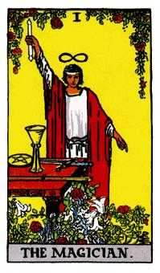
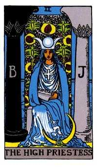
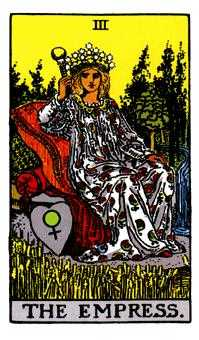
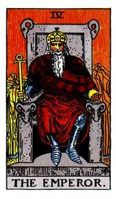
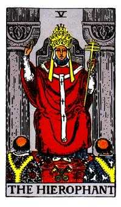

Section 1: The Architecture of the 78 Cards
The Tarot deck is a unified system of seventy‑eight symbolic cards. It functions as both a cosmic map and a psychological mirror, showing the journey of the soul from innocence to enlightenment, and reflecting the day‑to‑day influences on that path.
The deck is divided into three distinct groups, or Arcanas (Latin for “secrets”):
1. The Major Arcana (22 Cards, 0–21)
- The Great Secrets: These cards represent major life lessons, spiritual truths, and powerful, inescapable archetypal forces. When a Major Arcana card appears in a reading, it signifies that a powerful, life‑altering energy is at play.
- The Fool’s Journey: The Major Arcana tells a story—the quest of The Fool (0). He begins with innocence and travels through every human experience (love, hardship, success, death) until he achieves completion with The World (21).
Theoretical Framework: The Monomyth & Archetypes
The narrative structure of the "Fool’s Journey" on this site is supported by the Monomyth (Hero’s Journey) framework. By mapping the cards onto these universal stages, we can see the Major Arcana as a sequential map of psychological growth rather than a collection of random symbols.
"The hero’s journey is the path from the person you think you are to the person you are fully capable of becoming." — Joseph Campbell
This journey also utilizes Jungian Archetypes—universal patterns residing in the collective unconscious. This adds academic weight to the progression of the cards, framing the deck as a tool for what Carl Jung called "individuation."
"In all chaos there is a cosmos, in all disorder a secret order." — C.G. Jung
2. The Minor Arcana (56 Cards)
- The Lesser Secrets: These cards deal with the practical, daily ebb and flow of life—our immediate concerns, temporary conflicts, and small victories. They describe how the Major Arcana energies are playing out on the ground level.
-
The Four Suits / Elements: The Minor Arcana is broken down into four suits, each corresponding to an element of nature and a facet of human experience:
- Wands (Element of Fire 🔥): Will, career, identity. Keywords: passion, energy, growth, action, enterprise, ambition.
- Cups (Element of Water 💧): Emotion, relationships, soul. Keywords: love, feelings, intuition, creativity, dreams, spiritual connection.
- Swords (Element of Air 💨): Intellect, thought, conflict. Keywords: logic, truth, challenge, hardship, communication, justice.
- Pentacles (Element of Earth 🌍): Material world, body, wealth. Keywords: money, home, security, health, manifestation, resources.
3. The Court Cards (16 Cards)
- These are the personalities of the Minor Arcana (Page, Knight, Queen, King). They often represent actual people in the querent’s life, but can also represent manners of behavior or attitudes that the querent should adopt.
-
The Hierarchy:
- Pages: The Student or Messenger. New ideas, beginnings, youthful energy.
- Knights: The Action‑Taker or Movement. Rapid change, physical journey, impulsive approach.
- Queens: The Feeler or Master of Emotion. Mature, internal, receptive power; nurturing and intuitive.
- Kings: The Ruler or Master of the Domain. Mature, external, directive power; structure and achievement.

Section 2: The Archetypal Pillars (Major Arcana Deep Dive)
The Fool (0)
- Planetary/Zodiac Correspondence: Uranus / Air
- Keywords: Beginnings, innocence, leap of faith
- Upright: New adventure, trust, freedom
- Reversed: Recklessness, fear, poor judgment
The Magician (I)
- Planetary/Zodiac Correspondence: Mercury / Air
- Keywords: Action, skill, manifestation
- Upright: Power, confidence, ability
- Reversed: Manipulation, untapped potential
The High Priestess (II)
- Planetary/Zodiac Correspondence: Moon / Water
- Keywords: Intuition, mystery, subconscious
- Upright: Inner voice, hidden knowledge
- Reversed: Ignoring intuition, denial
The Empress (III)
- Planetary/Zodiac Correspondence: Venus / Earth
- Keywords: Abundance, creativity, nurturing
- Upright: Growth, pleasure, fertility
- Reversed: Creative block, dependency
The Emperor (IV)
- Planetary/Zodiac Correspondence: Mars / Aries / Fire
- Keywords: Authority, structure, discipline
- Upright: Leadership, order, stability
- Reversed: Tyranny, rigidity, loss of control
The Hierophant (V)
- Planetary/Zodiac Correspondence: — / Taurus / Earth
- Keywords: Tradition, teaching, conformity
- Upright: Spiritual guidance, institutions, orthodoxy
- Reversed: Rebellion, dogma, misguidance
The Lovers (VI)
- Planetary/Zodiac Correspondence: — / Gemini / Air
- Keywords: Union, choice, alignment
- Upright: Harmony, values match, partnership
- Reversed: Mismatch, indecision, imbalance
The Chariot (VII)
- Planetary/Zodiac Correspondence: — / Cancer / Water
- Keywords: Drive, victory, control
- Upright: Determination, willpower, conquest
- Reversed: Aggression, lack of direction, derailment
Strength (VIII)
- Planetary/Zodiac Correspondence: — / Leo / Fire
- Keywords: Courage, compassion, fortitude
- Upright: Inner strength, patience, taming the beast
- Reversed: Self‑doubt, insecurity, forcefulness
The Hermit (IX)
- Planetary/Zodiac Correspondence: — / Virgo / Earth
- Keywords: Solitude, wisdom, introspection
- Upright: Inner guidance, reflection, discernment
- Reversed: Isolation, avoidance, misanthropy
Wheel of Fortune (X)
- Planetary/Zodiac Correspondence: Jupiter / — / Fire
- Keywords: Cycles, fate, turning point
- Upright: Luck, change, destiny in motion
- Reversed: Resistance to change, setbacks, chaos
Justice (XI)
- Planetary/Zodiac Correspondence: — / Libra / Air
- Keywords: Fairness, truth, accountability
- Upright: Balance, cause and effect, legality
- Reversed: Bias, dishonesty, imbalance
The Hanged Man (XII)
- Planetary/Zodiac Correspondence: — / Water (Elemental Path) / Water
- Keywords: Surrender, perspective, suspension
- Upright: Letting go, sacrifice, seeing differently
- Reversed: Stagnation, martyrdom, delay
Death (XIII)
- Planetary/Zodiac Correspondence: — / Scorpio / Water
- Keywords: Endings, transformation, release
- Upright: Renewal, clearing, metamorphosis
- Reversed: Inertia, fear of change, clinging
Temperance (XIV)
- Planetary/Zodiac Correspondence: — / Sagittarius / Fire
- Keywords: Balance, alchemy, moderation
- Upright: Integration, patience, healing
- Reversed: Excess, discord, misalignment
The Devil (XV)
- Planetary/Zodiac Correspondence: — / Capricorn / Earth
- Keywords: Shadow, bondage, materialism
- Upright: Temptation, attachment, power dynamics
- Reversed: Liberation, awareness, breaking chains
The Tower (XVI)
- Planetary/Zodiac Correspondence: Mars / — / Fire
- Keywords: Upheaval, revelation, disruption
- Upright: Sudden change, truth strikes, collapse of falsehoods
- Reversed: Avoided disaster, lingering instability, denial
The Star (XVII)
- Planetary/Zodiac Correspondence: — / Aquarius / Air
- Keywords: Hope, renewal, guidance
- Upright: Inspiration, serenity, faith
- Reversed: Doubt, discouragement, disconnection
The Moon (XVIII)
- Planetary/Zodiac Correspondence: — / Pisces / Water
- Keywords: Illusion, intuition, subconscious
- Upright: Dreams, uncertainty, psychic tides
- Reversed: Clarity emerging, fear release, confusion lifts
The Sun (XIX)
- Planetary/Zodiac Correspondence: Sun / — / Fire
- Keywords: Vitality, joy, success
- Upright: Confidence, illumination, abundance
- Reversed: Temporary gloom, inflated ego, delayed success
Judgement (XX)
- Planetary/Zodiac Correspondence: Pluto (modern) / Fire (Spirit path) / Fire
- Keywords: Awakening, reckoning, rebirth
- Upright: Calling, absolution, renewal
- Reversed: Self‑judgment, doubt, missed call
The World (XXI)
- Planetary/Zodiac Correspondence: Saturn / Earth (fixed signs) / Earth
- Keywords: Completion, integration, wholeness
- Upright: Achievement, fulfillment, unity
- Reversed: Incompletion, delays, loose ends

Section 3: The Numerology of the Minor Arcana
- Ace (1) — Principle: Unity / Potential: The seed of the element. A pure blast of energy, a gift, a new beginning.
- Two (2) — Principle: Balance / Choice: Duality, cooperation, decision‑making, partnership, waiting.
- Three (3) — Principle: Growth / Synthesis: The first tangible result. Collaboration, expansion, celebration, fertility.
- Four (4) — Principle: Stability / Stagnation: Foundation, structure, rest, security—can become rigid.
- Five (5) — Principle: Conflict / Loss: Disruption, strife, challenge, testing limits, moving out of comfort.
- Six (6) — Principle: Harmony / Shift: Resolution after the five. Movement, connection, give/receive, victory.
- Seven (7) — Principle: Triumph / Illusion: Persistence, hidden obstacles, testing faith, personal integrity, illusion.
- Eight (8) — Principle: Action / Movement: Rapid progress, organization, applied effort, mastery.
- Nine (9) — Principle: Fulfillment / Climax: Nearing the end, wish‑fulfillment, satisfaction, anxiety about loss.
- Ten (10) — Principle: Completion / Burden: End of a cycle. Carrying a load, finality, conclusion, new cycle begins.

Section 4: The Minor Arcana (56 Cards)
A. The Suit of Wands (Fire: Will and Action)
- Ace of Wands
- Upright — Inspiration, new career path, creative spark, vitality.
- Reversed — Delays, lack of initiative, creative block, burnout.
- Two of Wands
- Upright — Planning, foresight, crossroads, balanced power.
- Reversed — Fear of change, lack of planning, stuck between options.
- Three of Wands
- Upright — Expansion, partnership success, looking ahead.
- Reversed — Delays, unmet expectations, business betrayal.
- Four of Wands
- Upright — Celebration, community, stability, homecomings.
- Reversed — Unstable home life, minor setbacks, temporary disharmony.
- Five of Wands
- Upright — Competition, inner conflict, minor disputes.
- Reversed — Conflict resolution, internal tension, unfair competition.
- Six of Wands
- Upright — Victory, recognition, progress.
- Reversed — Egotism, delayed reward, disgrace.
- Seven of Wands
- Upright — Courage, defense, boundaries.
- Reversed — Giving up, overwhelmed, weak boundaries.
- Eight of Wands
- Upright — Rapid movement, quick decisions, swift communication.
- Reversed — Delays, frustration, missed messages, slow progress.
- Nine of Wands
- Upright — Resilience, inner strength, preparation.
- Reversed — Paranoia, defensiveness, resisting help.
- Ten of Wands
- Upright — Burden, responsibility, hard work nearing completion.
- Reversed — Dropping the burden, delegation, collapse under stress.
- Page of Wands
- Upright — New inspiration, enthusiastic messages.
- Reversed — Bad news, procrastination, lack of ideas.
- Knight of Wands
- Upright — Action, bold movement, passionate energy.
- Reversed — Impulsiveness, recklessness, impatience.
- Queen of Wands
- Upright — Warm, confident, creative, determined.
- Reversed — Jealousy, scattered energy, volatile temper.
- King of Wands
- Upright — Visionary, entrepreneurial, charismatic leader.
- Reversed — Controlling, dramatic, unreasonable demands.
B. The Suit of Cups (Water: Emotion and Creativity)
- Ace of Cups
- Upright — Overflowing love, renewal, spiritual gift.
- Reversed — Blocked emotions, unrequited love, stifled creativity.
- Two of Cups
- Upright — Union, mutual attraction, harmony.
- Reversed — Breakup, conflict, imbalance.
- Three of Cups
- Upright — Celebration, friendship, community.
- Reversed — Overindulgence, gossip, disappointment.
- Four of Cups
- Upright — Boredom, apathy, discontent.
- Reversed — New opportunities, clarity, renewed interest.
- Five of Cups
- Upright — Loss, grief, focusing on what’s gone.
- Reversed — Acceptance, finding positives, forgiveness.
- Six of Cups
- Upright — Nostalgia, happy memories, kindness.
- Reversed — Clinging to the past, difficulty moving on.
- Seven of Cups
- Upright — Illusion, options, fantasy.
- Reversed — Focus, clarity of choice, realism.
- Eight of Cups
- Upright — Walking away, higher truth, transition.
- Reversed — Fear of change, shallow attachments.
- Nine of Cups
- Upright — Wish fulfillment, satisfaction, pleasure.
- Reversed — Excess, materialism, short‑lived win.
- Ten of Cups
- Upright — Lasting harmony, family joy, fulfillment.
- Reversed — Family conflict, discord, temporary lows.
- Page of Cups
- Upright — Good news, intuitive youth, daydreamer.
- Reversed — Emotional immaturity, bad news, avoidance.
- Knight of Cups
- Upright — Charm, proposal, romantic invitation.
- Reversed — Disappointment, seduction, moodiness.
- Queen of Cups
- Upright — Empathy, compassion, inner calm.
- Reversed — Dependence, martyrdom, volatility.
- King of Cups
- Upright — Emotional control, wise counsel, creativity.
- Reversed — Manipulation, suppressed feelings, mood swings.
C. The Suit of Swords (Air: Intellect and Conflict)
- Ace of Swords
- Upright — Breakthrough, clarity, decisive truth.
- Reversed — Confusion, misused power, injustice.
- Two of Swords
- Upright — Stalemate, blocked emotions, avoidance.
- Reversed — Release, facing fear, difficulty resolving.
- Three of Swords
- Upright — Heartbreak, separation, sorrow.
- Reversed — Healing, acceptance, reconciliation.
- Four of Swords
- Upright — Rest, contemplation, recovery.
- Reversed — Restlessness, rushed return, stagnation.
- Five of Swords
- Upright — Hollow victory, resentment, conflict.
- Reversed — Reconciliation, lessons learned, avoidance of consequence.
- Six of Swords
- Upright — Transition, moving on, necessary passage.
- Reversed — Stuck, trapped, difficulty escaping.
- Seven of Swords
- Upright — Deception, evasion, hidden motives.
- Reversed — Exposure, confession, failed plan.
- Eight of Swords
- Upright — Restriction, self‑imposed limits, powerlessness.
- Reversed — Release, freedom, new perspective.
- Nine of Swords
- Upright — Anxiety, nightmares, fear.
- Reversed — Letting go of fear, coping strength.
- Ten of Swords
- Upright — Rock bottom, painful ending, finality.
- Reversed — Recovery, survival, difficulty letting go.
- Page of Swords
- Upright — Curiosity, new ideas, mental energy.
- Reversed — Spying, gossip, speaking without thinking.
- Knight of Swords
- Upright — Ambition, fearless action, rushing in.
- Reversed — Aggression, recklessness, poor planning.
- Queen of Swords
- Upright — Independent, honest, clear boundaries.
- Reversed — Coldness, harsh critique, suppression.
- King of Swords
- Upright — Clear thinker, objective, fair judgment.
- Reversed — Calculating, abusive authority, cruelty.
D. The Suit of Pentacles (Earth: Material and Security)
- Ace of Pentacles
- Upright — Financial gift, new offer, stable foundation.
- Reversed — Missed opportunity, setback, poor investment.
- Two of Pentacles
- Upright — Juggling resources, adapting to change.
- Reversed — Overwhelmed, loss, difficulty multitasking.
- Three of Pentacles
- Upright — Teamwork, recognition, mastery of trade.
- Reversed — Mediocrity, poor teamwork, shoddy work.
- Four of Pentacles
- Upright — Security, control, saving money.
- Reversed — Hoarding, fear of loss, clinging to materialism.
- Five of Pentacles
- Upright — Hard times, exclusion, illness.
- Reversed — Recovery, employment, improvement.
- Six of Pentacles
- Upright — Generosity, charity, balanced exchange.
- Reversed — Debt, unequal giving, poor management.
- Seven of Pentacles
- Upright — Patience, slow growth, assessment.
- Reversed — Impatience, poor investment, quitting early.
- Eight of Pentacles
- Upright — Apprenticeship, dedicated skill, craft.
- Reversed — Perfectionism, low drive, poor reward.
- Nine of Pentacles
- Upright — Luxury, self‑sufficiency, independence.
- Reversed — Risk, theft, overspending, dependence.
- Ten of Pentacles
- Upright — Generational wealth, home, legacy.
- Reversed — Loss, disputes over money, instability.
- Page of Pentacles
- Upright — New opportunity, study, diligence.
- Reversed — Bad news, failure to study, wasted chances.
- Knight of Pentacles
- Upright — Reliable, patient, slow and steady.
- Reversed — Laziness, boredom, stagnation.
- Queen of Pentacles
- Upright — Practical, nurturing, domestic comfort.
- Reversed — Insecurity, neglect, possessiveness.
- King of Pentacles
- Upright — Financial security, grounded leadership.
- Reversed — Greed, corruption, abusive power.

Section 5: Essential Tarot Spreads for Clarity
-
The Three‑Card Quick Read (The Foundation)
- Purpose: Simple, direct insight into a situation’s timeline or dynamic.
-
Layout: Three cards in a horizontal line.
- Position 1 (Root): Cause, past, underlying issue.
- Position 2 (Trunk): Present action and influence.
- Position 3 (Flower): Likely future if the course continues.
-
The Simple Decision Spread (The Fork in the Road)
- Purpose: Insight before a binary choice between two paths.
-
Layout: Three cards: A, B, and C (central guidance).
- Position A: Path of option 1.
- Position B: Path of option 2.
- Position C: Guidance for choosing (drawn last).
-
The Celtic Cross Spread (The Deep Dive)
- Purpose: Most comprehensive spread for complex situations and long‑term trajectories.
-
Layout: Ten cards forming a cross and a staff.
- Positions 1 & 2 (The Cross): Present situation and crossing influence.
- Position 3: Root of the matter (subconscious/past origin).
- Position 4: Fading past influence.
- Position 5: Goal / Crown (conscious best outcome).
- Position 6: Near future (weeks/months).
- Position 7: The Self (attitude, role).
- Position 8: Environment (others / external world).
- Position 9: Hopes / Fears.
- Position 10: Outcome (if influences continue).

Section 6: The Ethics and Maintenance of the Deck
To maintain a healthy, intentional relationship with your deck, follow a clear code of ethics and practice.
-
The Cardinal Rules for Reading
- Do Not Predict Death (or Literal Disaster): Tarot reveals probabilities based on current energy, not absolute fates. Refuse fixed, negative outcomes—especially regarding death or illness. You are a guide, not a doomsayer.
- Empowerment, Not Dependence: The goal of a reading is to show the querent their agency. Frame outcomes as guideposts they can change by altering actions.
- Respect Free Will: Never read for a third party unless the query is strictly about the querent’s relationship to that person.
-
Cleansing and Protection
-
Initial Cleansing: When you first acquire a deck, cleanse it of prior energies. Methods:
- Knocking: Three sharp knocks to “wake it up.”
- Moonlight: Leave under the full moon overnight.
- Smoke Cleansing: Pass through incense (sage, cedar, etc.).
- Resting Place: Store in a protective container (silk cloth or wooden box) to shield from stray energies.
-
Initial Cleansing: When you first acquire a deck, cleanse it of prior energies. Methods:
-
The Reader’s Log
-
Log Entry Requirements:
- Date and Time: Note lunar phase/time of day.
- Question: Record the exact question.
- Spread Used: e.g., 3‑Card: Past / Present / Future.
- Cards Drawn: Include position + Upright (U) / Reversed (R).
- Interpretation: Immediate analysis before outcome.
- Outcome (Follow‑Up): Revisit after a week/month and record learning.
-
Log Entry Requirements: